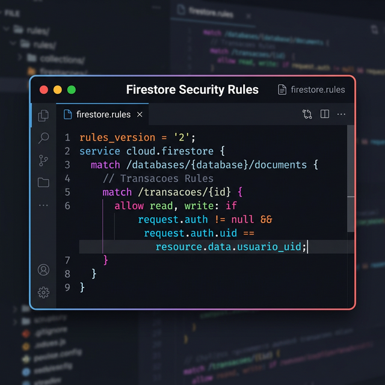

Estudo de Caso 9 — Firebase Security Rules
Objetivo da Semana
Configurar de forma sólida a segurança na leitura e reescrita do Banco de Dados no Firebase, garantindo que usuários que possuam vínculos sistêmicos apenas tenham acesso ao que realmente pertencem a eles.
Passo a Passo da Atividade
Solicite a uma IA que o auxilie a preparar um snippet com as regras adequadas para as definições de suas coleções, baseando-se no modelo de controle que as mesmas possuem (acesso público restrito a Create, autenticação requerida e limitação por UID, por exemplo).
Exemplo de Prompt: "Preciso criar regras de segurança (Security Rules) para o Firebase Firestore. Terei uma coleção [nome da coleção] onde o campo 'id_criador' armazena o ID do usuário logado. Escreva a regra..."
Adicione o bloco formatado no Firebase Console, vá em "Rules" (Regras) do Firestore, cole, e use a ferramenta "Rules Playground" do Firebase para simular acesso com IDs aleatórios e validar que o bloqueio realmente foi ativado.
Dentro do próprio compilador do aplicativo, crie e logue em contas diferentes para visualizar se as listas de dados são retornadas corretamente em "vazias", caso o documento já criado não pertencesse a essa "nova" conta logada.
Tire Screenshots do Workspace do Firebase comprovando as regras recém-escritas ativadas, e cite as validações logadas e provadas eficientes com mais de uma conta.
Para concluir as atividades desta semana, reúna todas as informações e artefatos gerados nos passos anteriores e preencha o template oficial de entrega. Faça uma cópia do documento para a sua conta Google e compartilhe-o com o professor.
📱 Estudo de Caso: FinanCampus
Veja como o grupo do FinanCampus configurou as Security Rules nesta semana.

Security Rules configuradas em todas as coleções:
transacoes: regras de read, create, update e delete com condiçãorequest.auth.uid == resource.data.usuario_uid.categorias: leitura pública (todos leem as categorias pré-definidas); escrita restrita ao console.
Teste de isolamento: criaram dois usuários (aluno1@teste.com e aluno2@teste.com). Cada um inseriu 3 transações. Ao alternar entre as contas, a listagem exibiu apenas as transações do usuário logado ✅. Tentativa de acesso via Rules Playground com UID diferente resultou em operação bloqueada ✅.